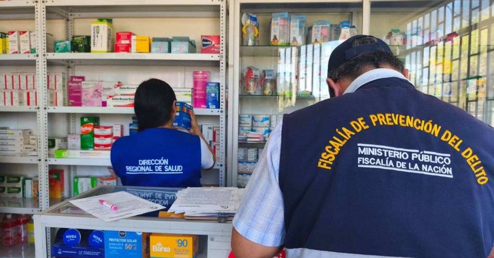

En un operativo sorpresa que movilizó a fiscales y efectivos de la Policía Nacional, la Segunda Fiscalía de Prevención del Delito de Piura intervino varios establecimientos farmacéuticos en el distrito de Veintiséis de Octubre, logrando el decomiso de 879 unidades entre medicamentos y productos sanitarios que no cumplían con las condiciones mínimas de seguridad y legalidad. La incautación incluyó fármacos presuntamente falsificados, vencidos, de procedencia extranjera sin autorización, sin registro sanitario nacional o de origen desconocido.
El operativo, que se enmarca en una estrategia más amplia contra la comercialización ilegal de productos farmacéuticos, se desarrolló en varias boticas y farmacias del populoso distrito piurano. Los agentes del Ministerio Público, acompañados por personal de la Dirección de Salud (Diresa) y de la Superintendencia Nacional de Salud (Susalud), verificaron la documentación y las condiciones de almacenamiento de los medicamentos, encontrando graves irregularidades que ponían en riesgo la salud de los consumidores.
Según el reporte oficial, entre los productos decomisados se encontraron antibióticos, analgésicos, antiinflamatorios, medicamentos para el sistema cardiovascular y productos sanitarios como apósitos y soluciones intravenosas, muchos de los cuales carecían de etiquetado en español o presentaban signos evidentes de adulteración. También se hallaron lotes con fechas de vencimiento superadas hace varios meses, lo que significa que su eficacia terapéutica ya no está garantizada y su consumo podría ser peligroso.
La comercialización de medicamentos irregulares representa una amenaza silenciosa para la población. Los fármacos falsificados pueden contener principios activos en dosis incorrectas, sustancias tóxicas o ningún ingrediente terapéutico, lo que agrava las enfermedades y puede provocar reacciones adversas graves. Los productos vencidos, por su parte, pierden su potencia y pueden descomponerse en compuestos dañinos para el organismo.
El fiscal a cargo de la intervención destacó que muchos de estos medicamentos provienen de redes de contrabando que ingresan al país sin control sanitario. "No sabemos qué contienen realmente. No hay garantía de que hayan sido fabricados en condiciones de esterilidad o que su composición sea la declarada", advirtió. Agregó que el operativo busca desarticular estas redes y enviar un mensaje claro a los infractores: la venta ilegal de medicamentos será perseguida con todo el peso de la ley.
La deficiente conservación de los productos también es un factor crítico. En muchos casos, los medicamentos requieren temperaturas controladas, y al ser almacenados en condiciones inapropiadas, su estabilidad química se altera, lo que puede generar subproductos tóxicos. Esto es especialmente peligroso en medicamentos biológicos o aquellos que contienen hormonas, insulina o vacunas, aunque en el operativo no se reportaron biológicos, sí se hallaron productos que exigen cadena de frío.
Productos decomisados en el operativo:
Las autoridades identificaron que muchas de estas boticas operaban con una fachada de legalidad, exhibiendo licencias de funcionamiento que no cubrían la venta de medicamentos, o utilizando permisos de otras jurisdicciones. Algunos establecimientos incluso contaban con autorización sanitaria, pero al momento de la inspección se encontraron productos que no estaban registrados en su inventario oficial, lo que evidencia una práctica de comercialización paralela.
El fiscal señaló que, en varios casos, los responsables de los locales no pudieron acreditar la procedencia de los medicamentos ni presentar las facturas o guías de remisión que exige la normativa. "Esto nos indica que operan al margen de la cadena de suministro legal, adquiriendo productos de proveedores no autorizados, muchas veces a precios muy bajos, y los revenden a la población sin ningún control de calidad", explicó.
Además, se detectó que algunas boticas ofrecían medicamentos que solo deberían venderse con receta médica, sin exigir la prescripción correspondiente. Esto facilita la automedicación y el uso inadecuado de antibióticos y otros fármacos de venta restringida, contribuyendo al problema de la resistencia bacteriana y a efectos adversos evitables.
Ante este escenario, las autoridades hicieron un llamado enfático a la población para que extreme las precauciones al momento de adquirir medicamentos. La recomendación principal es evitar la compra en puestos ambulatorios, ferias, mercados informales o boticas que no exhiban de manera visible su autorización sanitaria otorgada por la Dirección General de Medicamentos, Insumos y Drogas (DIGEMID).
Los expertos en salud pública sugieren verificar que el envase del medicamento cuente con el registro sanitario correspondiente, que se identifique claramente el principio activo, la concentración, el lote, la fecha de fabricación y vencimiento, y que el producto esté en perfectas condiciones de sellado. También es fundamental exigir el comprobante de pago, ya que esto permite rastrear el producto en caso de alguna incidencia.
La Fiscalía habilitó canales de denuncia para que la ciudadanía reporte establecimientos que vendan medicamentos sin las debidas garantías. También se puede comunicar con la DIGEMID o con la policía para alertar sobre puntos de venta informales. La colaboración ciudadana es clave para desmantelar estas redes y proteger la salud de todos.
La Segunda Fiscalía de Prevención del Delito de Piura ha venido realizando operativos periódicos en diferentes puntos de la región, con el objetivo de frenar el comercio ilegal de productos farmacéuticos. En lo que va del año, se han decomisado miles de unidades en diversos distritos, lo que evidencia la magnitud del problema.
Los fiscales especializados en prevención del delito trabajan de manera coordinada con la Policía Nacional, la Diresa, Susalud y la DIGEMID para realizar inspecciones inopinadas y dar seguimiento a las denuncias. Además, se promueven campañas de información dirigidas a la población para que conozcan sus derechos y sepan identificar productos sospechosos.
En el caso específico de Veintiséis de Octubre, los operativos se han intensificado debido al crecimiento de la oferta informal de medicamentos en esta zona, que concentra una alta densidad poblacional y una importante actividad comercial. Las autoridades han advertido que continuarán con las intervenciones y que se sancionará a los responsables con multas, clausura de locales e incluso penas privativas de la libertad si se acredita la comisión de delitos contra la salud pública.
La comercialización de medicamentos falsificados, vencidos o sin registro sanitario constituye un delito en el Perú, tipificado en el Código Penal como atentado contra la salud pública. Las penas pueden alcanzar varios años de prisión, además de las sanciones administrativas que imponen las entidades reguladoras.
El fiscal a cargo del operativo señaló que se han iniciado las investigaciones correspondientes para determinar la responsabilidad de los propietarios de los locales intervenidos. Se revisarán los registros contables, las facturas y los contratos con proveedores para establecer el origen de los productos y la magnitud de la red de distribución ilegal. En los casos más graves, se solicitará la prisión preventiva para los implicados.
Además, se notificará a la DIGEMID para que proceda con la cancelación de las autorizaciones sanitarias de aquellos establecimientos que hayan incurrido en faltas graves. La reincidencia será sancionada con la clausura definitiva y la inhabilitación para ejercer el comercio de productos farmacéuticos.
El operativo en Piura deja en evidencia que la lucha contra la comercialización irregular de medicamentos es una tarea que requiere el compromiso de todos los actores sociales. Las autoridades sanitarias y judiciales están desplegando sus recursos, pero la participación activa de la ciudadanía es indispensable para detectar y erradicar estas prácticas.
Los especialistas recomiendan adquirir medicamentos exclusivamente en farmacias y boticas formalmente establecidas, que cuenten con la presencia de un químico farmacéutico o técnico capacitado, y que exhiban su licencia de funcionamiento y su autorización sanitaria en un lugar visible. También aconsejan no dejarse engañar por ofertas de precios muy bajos, pues suelen ser indicadores de productos de dudosa procedencia.
La Fiscalía de Prevención del Delito reiteró que las denuncias pueden presentarse de manera presencial en sus oficinas o a través de los canales virtuales habilitados. Cada reporte permite orientar los operativos y focalizar los recursos en las zonas de mayor riesgo. La protección de la salud pública es un deber de todos, y la información oportuna es la mejor herramienta para evitar que medicamentos peligrosos lleguen a las manos de los pacientes.
Mientras el proceso judicial avanza, los 879 productos decomisados permanecen bajo custodia fiscal y serán destruidos conforme a la normativa vigente, una vez que se complete el procedimiento de rigor. Las autoridades confían en que este operativo tendrá un efecto disuasivo y contribuirá a desincentivar la comercialización ilegal de fármacos en la región Piura y en todo el país.